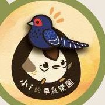
1
小ｉ的早鳥樂園
攤位介紹
「小ｉ的早鳥樂園」帶來各種手作的臺灣鳥類布偶，精緻的做工完美還原鳥兒們的風采，希望能作為大家想認識臺灣鳥類的敲門磚。
可愛的雀球系列（臺灣朱雀、赤腹山雀、帝雉、冠羽畫眉、繡眼畫眉、五色鳥、烏頭翁、鵂鶹等）和 1:1 的鳩鴿系列、信天翁寶寶、黃喉貂等，讓大家可以近距離拍照互動。
🐾 2026 Walk for Wildlife 🌿
歡迎下載列印，帶著標語一起上街為野生動物發聲！點選圖片即可下載 A3 尺寸 PDF 檔。
今年的「為野生動物而走」市集集結 25 個保育團體與生態創作者，透過調查研究、救傷照養、環境教育、政策倡議與創意設計，在各自的位置上守護臺灣的生物多樣性。歡迎大朋友小朋友一起來逛逛，今年一樣有集章活動喔🎁

「小ｉ的早鳥樂園」帶來各種手作的臺灣鳥類布偶，精緻的做工完美還原鳥兒們的風采，希望能作為大家想認識臺灣鳥類的敲門磚。
可愛的雀球系列（臺灣朱雀、赤腹山雀、帝雉、冠羽畫眉、繡眼畫眉、五色鳥、烏頭翁、鵂鶹等）和 1:1 的鳩鴿系列、信天翁寶寶、黃喉貂等，讓大家可以近距離拍照互動。
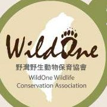
於 2020 年在台東池上成立「東台灣第一間非營利野生動物醫院」，至今仍是東台灣唯一，與屏東分部合計，救援超過 4,800 隻、200 種不同的物種。
透過「救傷與照養」延續生命，以「環境教育」深入民間，將「生態調查」的結果傳達給大眾；了解野生動物面臨的生存威脅，讓人與野生動物共生共享這片土地。
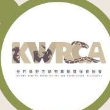
金門縣野生動物救援暨保育協會（Kinmen Wildlife Rehabilitation and Conservation Association, KWRCA）是臺灣離島唯一的野生動物救傷站，以野生動物救傷為核心宗旨，自 2015 年成立以來，至今已救援超過 3000 例野生動物；有感於野生動物傷病原因與人類活動之密切關聯，以野生動物救援案例為基礎，辦理超過百場生態保育宣導活動，提升社會大眾關注生態環境議題。
期望透過救治、復健、野放、教育之行動，達到生態保育、野生動物復育、觀念的推廣，並追求環境之永續發展。
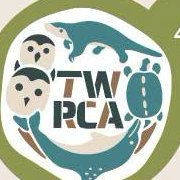
台灣野生動物救傷與保育學會成立於 2024 年 1 月，是台灣第一個關注野生動物救傷專業職能、法規及相關議題的學會團體。希望藉由教育推廣、職業訓練、法規認證等等，來提升台灣野生動物醫療照養品質、促進野生動物福祉，達到實現健康一體及環境永續的目標。
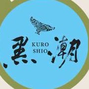
花東海域擁有得天獨厚的海洋資源，是鯨豚棲息和遷徙的路徑，但人類不當或過度的活動如漁業、賞鯨和污染，卻造成鯨豚生存的壓力。對野生鯨豚而言，最大的威脅就是人類，我們期望能在來得及之前，為東海岸鯨豚留下一片海洋綠洲，期待達到人與海洋、人與鯨豚和平共存的願景。
歡迎來黑潮攤位透過互動遊戲、黑潮義賣品認識臺灣東部海域的鯨豚多樣性，及瞭解牠們會面臨的威脅！
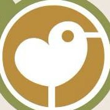
台灣蠻野心足生態協會長期投入野生動物與棲地保育，關注環境開發、生物多樣性及公共政策等議題，並透過研究、倡議、環境教育與環境訴訟，推動更具永續性的環境治理。
近年協會持續參與台灣白海豚保育工作，包括目擊資料蒐集、公民科學推廣、棲地議題倡議，以及與研究單位、政府、漁民和國際保育組織交流合作。協會相信，保育不只是保護單一物種，更需要從生態、社會與政策面共同思考，讓科學知識轉化為實際行動，促進人與自然更友善且長久的共存關係。
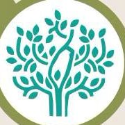
地球公民是由大眾募款成立的基金會，長期關注山林國土、花東永續、工業污染、氣候變遷與能源轉型，堅持環境與世代正義，透過調查研究、社會對話與公民行動，推動環境個案及法令政策改變。
相信每個人都能為環境付出心力，讓臺灣更接近永續，也善盡「地球公民」的責任！🌱
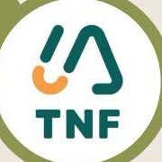
2001 年，「台灣環境資訊協會」誕生，藉由普及環境資訊交流、推動民間保護區、舉辦生態工作假期與環境教育講座，來守護山林、海洋與濕地；2024 年，本會正式轉型為自然保育與環境資訊基金會，結合農業法人資格，持續透過推動「環境信托」的模式來守護平地與淺山等重要生態棲地，為住在台灣這片土地的台北赤蛙、穿山甲、五色鳥和許多動、植物朋友們保留最棒的家園！
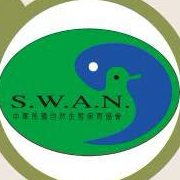
本會於 70 年代初期創立，以帶領大眾貼近大自然為目標，藉由認識、瞭解、與愛護自然為核心，從親近泥土、山嶽、河川中，傳遞綠色家園需要永續發展的理念。近來著重呼籲倡導「生物多樣性保育」，串連自然界各環節進而關照整個生態系。唯有體察環環相扣的自然界，並落實生物多樣性保育，才能讓生態系綿延不絕，一起為子子孫孫留下美好樂土盡一份心力！
遊行當日攤位備有：「台灣保育類野生動物」插圖胸章／磁鐵——讓我們一起用心儀的保育動物們妝點自己，讓生物多樣性的保育融入生活；以及「大自然」148 期「別有洞天」、147 期「福爾摩沙蕨•饗」。本會於 1983 年創刊本土保育刊物，致力宣導台灣生態環境、生物多樣性與自然保育觀念，內容涵蓋海洋、陸域生態及動植物保育，陪伴一代又一代對保育有興趣的民眾。
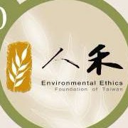
人禾環境倫理發展基金會成立於 2007 年，是致力於環境教育與永續發展的非營利組織，長期推動環境學習中心建構、環境教育扎根及生態保育行動，期望深化人與自然和諧共存的環境倫理。基金會積極結合社區、學校及政府單位，透過體驗課程、公民參與及里山、溪流等生態保育計畫，提升大眾對生物多樣性與永續議題的關注，並將環境教育落實於日常生活。
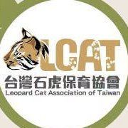
今年，我們持續關注犬貓議題與友善農地，致力減少遊蕩犬貓對野生動物的威脅，也支持與動物共生共好的農事行動！一起選擇友善農業，愛護台灣土地，守護野生動物。
現場捐款滿額回饋禮超豐富🎁 石虎系列 L 夾、原子筆、刺繡徽章！全品項各 2 款，一起用行動支持野生動物！
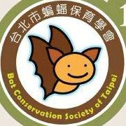
提到蝙蝠，你想到的是什麼？吸血、病毒，還是黑暗中令人害怕的動物？其實，蝙蝠是我們生活周遭常見，卻也經常被誤解的野生動物。牠們在生態系中扮演重要角色，有些捕食昆蟲，有些協助植物授粉與種子傳播；即使在人口密集的城市裡，公園、校園、河濱與建築物周遭，都可能有蝙蝠與我們共同生活。
台北市蝙蝠保育學會長期投入蝙蝠生態調查、研究、保育與環境教育，希望透過更多科學知識與實際行動，讓蝙蝠不再因為恐懼與錯誤資訊而受到過度的誤解。
這次「為野生動物而走」，歡迎來到我們的蝙蝠攤位！現場除了有蝙蝠繪本、可愛蝙蝠布偶及蝙蝠文創品，也準備了蝙蝠 Q&A 互動，一起破解常見迷思、認識臺灣的蝙蝠。🦇 為蝙蝠而走，也為每一種被誤解的野生動物而走。
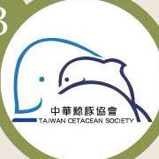
中華鯨豚協會（Taiwan Cetacean Society）自 1998 年成立，全年無休地投入擱淺動物救援，甚至遠至離島，只為拯救一條誤闖陸地的生命。協會亦長年推廣海洋生態保育、提倡友善賞鯨，投入野生動物研究與政策倡議，致力守護我們的海洋鄰居與牠們的棲息地。
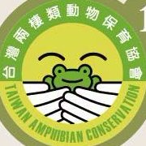
台灣兩棲類動物保育協會為依法設立非營利為目的之社會團體，以調查、保育台灣兩棲類動物及其棲地，並維護台灣生物多樣性、推廣生態保育教育、監測控制外來入侵物種為宗旨。本會的任務分為五大類：
臺灣蜂類保育協會是致力於蜂類保育與生態教育的非營利組織，以推廣蜂類保育及永續生態理念為宗旨。協會長期投入蜂類生態調查、環境教育、養蜂知識推廣及人蜂衝突防治，透過講座、體驗活動與公民參與，提升大眾對蜜蜂、獨居蜂及虎頭蜂等各類蜂類的正確認識，並倡導友善環境與授粉昆蟲保育的重要性。
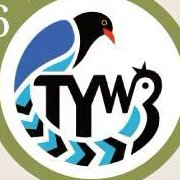
「碰！」的一聲，又是一隻鳥兒倒在透明玻璃前。在鳥類快速飛行的視角中，透明或反光的窗戶宛如隱形殺手。
桃園市野鳥學會附設非營利野生動物診所邀請你透過「鳥兒飛行大挑戰」投擲闖關，體驗鳥類閃避障礙的難度，一起揭開窗殺的真相，學會如何在日常中守護野生鄰居！
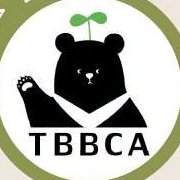
台灣黑熊保育協會致力於保育瀕臨絕種的台灣黑熊，透過科學研究、政策倡議、教育推廣及民間資源整合，持續提升台灣熊類保育水準。我們正持續推動台灣黑熊知識普及、凝聚社會共識，促進人與黑熊的和平共存。
攤位亮點：
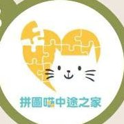
拼圖喵生命平權推廣協會邀請大家來我們的攤位走走，認識我們的理念與工作內容。我們將以 TNSA【捕捉（Trap）、絕育（Neuter）、收容（Shelter）、認養（Adopt）】的行動精神為基礎，持續推廣收容與認養成為大家都能參與的日常行動。
我們也期待大家多多使用【喵加人認養平台】的服務，或者有機會到【拼圖喵給貓館】走走，讓更多毛孩有機會找到家。現場亦提供捐款受理，捐款者可獲得可愛的貓貓相關回饋品。
我們準備了清涼的貓便當茶，歡迎大家前來喝喝茶聊聊天，期待在活動中與大家一起為動物平權發聲。
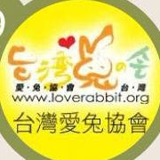
台灣愛兔協會除了寵物兔的救援安置以外，也致力於台灣野兔的救傷及教育推廣。台灣野兔屬於台灣特有亞種的兔科動物，卻因為非瀕危物種、也非明星物種，許多人並不知道台灣山林中有這些珍貴的小國寶存在。
近年不少證據顯示台灣野兔族群正在減少，愛兔協會邀請您一起關心台灣野兔，不要等到他們消失了，才開始重視。
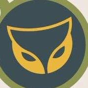
台北城市狩獵是一個帶大人下班後走進都市近郊、在夜晚重新認識城市野生動物的生態體驗團隊。台灣的城市與森林其實離得很近。當我們走進夜晚的步道、溪流與城市邊緣，常常會發現：野生動物一直都在我們身邊，只是多數人從來沒有機會看見牠們。
我們相信，許多人並不是反對保育，而是對生態「沒有感情、沒有意識，也不知道」。因此，我們希望讓生物多樣性不只停留在知識、倡議或抽象理念，而是透過一次真實、有趣、讓人記得住的體驗，讓原本與生態毫無關係的人，也有機會開始認識、喜歡，甚至產生願意保護牠們的理由。
如果你也在思考，如何讓保育走出同溫層、讓更多不同的人與自然產生連結，或想一起發展兼顧生態保育與大眾價值的新玩法，歡迎來找我們聊聊。
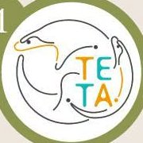
中華民國生態專業技術服務商業同業公會致力於整合臺灣生態專業技術能量，串聯生態調查、環境影響評估、生態檢核、棲地復育及永續發展等領域的專業團隊，促進產、官、學界交流合作。
公會積極推動生態專業人才培育、技術交流與制度發展，並透過教育訓練、研討會及政策倡議，提升生態專業服務品質，協助公共建設與產業發展兼顧自然保育與生物多樣性。
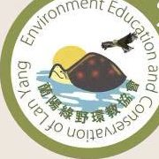
蘭陽綠野環境教育及保護協會是以宜蘭為基地，長期投入野生動物保育、環境教育及生態推廣，致力於提升大眾對野生動物福利、生物多樣性及自然環境保護的認識。
協會透過生態解說、校園宣導、野生動物救援與保育行動，以及公民參與活動，推廣人與自然和諧共存的理念，並協助政府及民間團體共同推動環境保育工作。
棲地流失與生物多樣性的下降，是當今野生動物所面臨的共同挑戰。Optisan 歐帝生希望透過光學產品與其所創造的商業價值，為改善這些問題盡一份心力。
透過持續支持環境教育、推廣賞鳥活動，並投入棲地復育等保育專案，為守護自然生態貢獻力量。
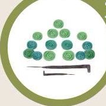
「山下無人」是以臺灣野生動物與山林生態為主題的創作品牌，由具環境教育背景的創作者成立，希望透過羊毛氈創作、美學設計與故事分享，拉近大眾與自然的距離。
品牌以細膩的手作呈現臺灣特有種及各類野生動物，將生態知識融入作品之中，讓保育理念更貼近日常生活。除了創作展示，也積極參與市集、環境教育及保育推廣活動，期望喚起更多人對生物多樣性與野生動物保育的關注。
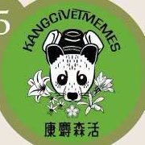
康麝森活是由一群熱愛自然的生態工作者組成的團隊，以生態保育與環境教育為核心，善於運用迷因、圖文創作、Podcast、野外導覽及文創設計等多元媒介，將艱澀的保育議題轉化為淺顯有趣的內容，讓更多人認識臺灣豐富的生物多樣性。
團隊長期關注野生動物保育、棲地維護及環境永續，希望透過創意與知識的結合，拉近大眾與自然的距離，鼓勵更多人投入保育行動。
八位來自研究、救傷、教育、動保與媒體領域的講者，從石虎、穿山甲、小燕鷗、海龜到犬貓議題，分享他們在第一線看見的野生動物處境。

台灣石虎保育協會秘書長
陳美汀秘書長從事石虎研究和保育工作多年，即使需要面對各種壓力和負面情緒，只要能從自動相機拍到石虎影像或無線電追蹤聽到牠們活動的訊號，總能轉化負面情緒。然而，個人的保育能量有限，透過大家的合作協力，能讓環境監督、棲地保護、教育推廣或研究調查種種保育行動的效果擴展和深化，這需要凝聚眾人的熱情、建立共同信念並一起行動。
創立台灣石虎保育協會和推動石虎保育工作多年，深刻感受到民眾的熱情與力量，讓我們再一次參與為野生動物發聲、宣示和凝聚力量的行動。讓我們一起為野生動物而走！

社團法人臺灣野灣野生動物保育協會 創辦人／秘書長・獸醫師
綦孟柔獸醫師從喜歡動物，到真正走進野生動物救傷現場，一路陪伴許多傷病野生動物走過最脆弱的時刻。畢業的幾年後，面對東部救傷資源不足，她選擇留下來，投入野生動物醫療與保育工作，並共同創立野灣野生動物保育協會。每一次救援，不只是挽救一條生命，也讓更多人看見，人與野生動物其實共享著同一片土地。
目前主要的業務重點在於協會的營運管理，希望藉由野生動物救傷的案例，帶出此刻野生動物所面臨到的問題，進而想出能夠落地的解方。
國立屏東科技大學 獸醫學系
記得有一次在診間遇到撿到小松鼠來詢問怎麼飼養的飼主，透過各種道德勸說、野生動物照養不易等等，終於打動飼主願意送往救傷單位，並且聽到飼主說讓他能夠自由地回到野外對他才是最好的，在心中響起小小的歡呼～

國立屏東科技大學 野生動物保育研究所 食蟻動物研究室 研究助理
一個小小的發報器訊號，背後可能是一隻穿山甲正在野外努力活下去。劉仲景長期投入穿山甲追蹤與保育研究，工作包含穿山甲食性物種分析、自動相機架設與無線電追蹤。循著一筆筆移動軌跡，他不只記錄牠們去了哪裡，也看見遊蕩犬等威脅如何悄悄影響牠們的生存，讓原本藏在山林裡的危機被更多人看見。
今年 4 月～6 月，在馬頭山發現了花生、阿喬，同時也異地野放了米酒這三隻小穿山甲；然而花生跟阿喬因為流浪狗而死，米酒則因為網具纏繞也死了。雖然當然不是什麼好事，要說覺得不可惜也是騙人的，但是能夠看到他們的故事被更多人知道，也有不少人願意正視並理性思考這個十年來難解的議題，就會覺得他們不是白白犧牲。只要有更多人願意在意這個議題，對研究者們來說就是最好的鼓舞。
雖然常常要為了追蹤，在山裡待到半夜凌晨，也時常為了收集自動相機的影像資料而在密林中砍草開路、曬太陽淋雨、被蚊子叮到滿頭包。確實是蠻辛苦的，但是在過程中，到達了平常只有野生動物在活動的森林裡，看到他們的腳印、排遺，以及地貌隨時間的改變，再到收到影像，看到動物們各種有趣的活動行為，或是看到我們追蹤的穿山甲也自由的生活著，就會覺得一切都是值得、有趣而且讓人開心。

國立臺灣大學 森林環境暨資源學系 博士生
張瀚柏從大學起長期參與鳥類研究與調查工作，因協助執行離岸風場海上鳥類調查，近年尤其關心海鳥在台灣的族群狀態，以台灣小燕鷗保育生物學為研究主題。
🎤 受到遊蕩犬和人類活動侵擾的小燕鷗，究竟需要面對什麼樣的威脅？我們又能怎麼辦？
瀚柏想對大家說的話：「水域環境是遊憩的好地方，也是海鳥孕育下一代的重要環境。多一份理解與小心，就能為小燕鷗留下一片安心繁衍的土地。」
國立臺灣師範大學與中央研究院生物多樣性學程 博士
自大學時期在蘭嶼擔任產卵海龜巡護志工之後，便一直在海龜研究與海洋保育領域投入心力，至今超過十五年。2017 年，她與夥伴共同發起公民科學計畫「海龜點點名」（TurtleSpot Taiwan），運用海龜臉部獨特鱗片的 Photo-ID 辨識方法，邀請潛水員與民眾一起記錄海龜影像，建立「海龜戶口名簿」。除了研究，亦長期投入科普講座與保育倡議，希望能讓更多人認識海龜和海洋。
🎤 流浪狗與海龜的關係——平時在海裡生活的海龜，其實也面臨到遊蕩犬種種的問題。

拼圖喵生命平權推廣協會 創辦人
66 年次的六年級生，人稱「燒賣」，背景是資訊管理，當了 10 餘年的工程師。在日常業務中反思自己的人生應該從事更有歸屬感的事情，在 30 多歲時辭去遊戲工程師的穩定工作，創辦了「拼圖喵中途之家」（社團法人拼圖喵生命平權推廣協會），以及「養貓人家」社會企業，自 2014 年開始致力將民眾刻板印象裡髒亂的中途之家，打造成一個人貓共好的「生命教育機構」。
經營過貓旅館、考過寵物美容師證照，還曾誤入私人繁殖場工作，這些經歷給他的回饋，讓他對推廣動物權益和生命平權的公共議題有更全面的想法，並持續為之努力。
🎤 TNSA 是什麼？跟 TNR 又有什麼差別？
一間普通又不普通的貓中途，一間幫貓又不只幫貓的生命平權推廣機構，一個想要讓貓與人都能好好向彼此學習，陪伴彼此生活的地方。我們歡迎所有大小朋友，一起來交貓朋友。
我們希望讓所有在拼圖喵中途的貓咪們，只要認真的做他們自己，就能開開心心的享受自在的貓生，找到有緣一起完成人生冒險的家人。我們努力創造一個人貓共好的環境，成為彼此生命缺憾的拼圖。我們也用照顧大量街貓的經驗，致力開發對貓咪最合適的食物和用品，期許經營一間可以自給自足的街貓中途之家，更有系統的改善流浪動物問題。
有一次看到家裡的貓半趴在地上不知道嘴裡叼著什麼，衝過去一看，發現貓貓嘴裡叼著一隻小壁虎！急忙讓貓貓把壁虎給吐出來，萬幸的是壁虎似乎還沒有受傷、看上去完整也還能行動，就一邊擋著不讓貓貓再靠近一邊護送壁虎離開。就這樣地球又平安度過了一天。

科普作家・生態教育工作者
榮獲四座金鼎獎、兩屆吳大猷獎之科普作家、生態教育工作者。成長於繁華都市，卻擁有一雙善於發現自然野趣的眼睛。集寫作、繪畫、攝影、藝術設計、空間視覺設計等多重創作人身分於一身，專注於將自然素材做為創作元素，以美學視角將所見的自然生態之美轉化成活潑多元自然創作、書籍等作品。
近年致力以淺顯有趣的入門課程，用說故事的方法，引導更多人走向自然、保護自然。著有《自然野趣DIY》、《婆羅洲雨林野瘋狂》、《自然觀察達人養成術》、《自然怪咖生活週記》、《鳥類不簡單》、《怪咖動物偵探》系列等。作品深受好評，迭獲金鼎獎、台北國際書展首獎、吳大猷科學普及獎、Openbook 年度好書獎等各獎項肯定。
🎤 迷失的生態教育——生態教育發生了什麼事？大家對生態教育的認識都是在同一條線嗎？

第四屆環保青年領袖・政大傳播碩士生
世新新聞系畢業，現就讀政大傳播碩士。曾在公視《我們的島》、中央社、東森新聞實習，長期關注生態議題，透過新聞專題將野生動物困境帶入公共討論。
曾獨立製作《龜途無期》（探討原生斑龜棲地危機與路殺問題）、《網錮鳥命》（揭露草莓園鳥網對野鳥的威脅）及《善良的考驗》（剖析錯誤愛心與野鳥救援困境）等野生動物新聞專題。
小時候就接觸父親養的蠍子、毛蜘蛛與鱷龜，當其他小孩尖叫逃跑時，她早已學會靜靜觀察，養成「先理解、不排斥」的特質。
製作專題時堅持不給動物死亡畫面打碼，常被朋友笑問「怎麼都在拍屍體？」。她認為唯有呈現最真實的震撼，才能直觀地喚起大眾的保育意識。
沛芸作為青年領袖，跟我們聯盟其實有非常相似之處，都希望透過青年的力量來推動一些改變，希望環境可以變得越來越好！